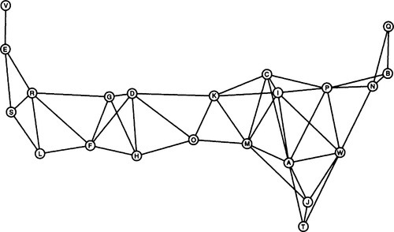
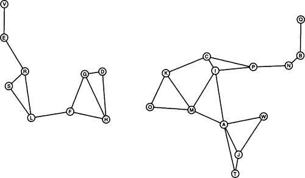
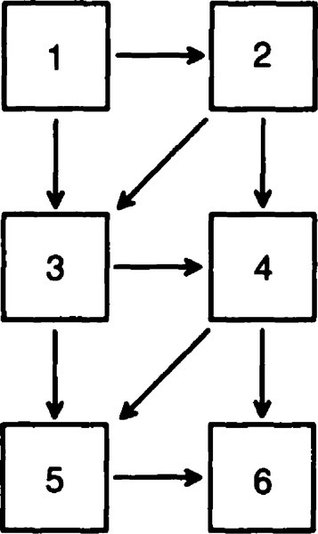
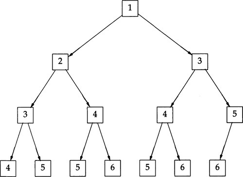
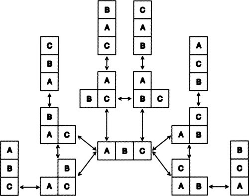

|
paip-ru
1
|
Человек - животное, использующее инструменты ... Без инструментов он - ничто, с инструментами он все.
-Thomas Carlyle (1795-1881)
В главах 4 и 5 мы были заинтересованы в создании двух конкретных программ, GPS и ELIZA. В этой главе мы еще раз рассмотрим эти две программы, чтобы выявить некоторые общие закономерности(шаблоны). Эти закономерности(шаблоны) будут абстрагированы, чтобы сформировать программные инструменты для многократного использования, которые окажутся полезными в следующих главах.
Структура функции eliza обычная. Она повторяется ниже:
Многие другие приложения используют этот шаблон, включая сам Лисп. Верхний уровень Lisp можно определить как:
Верхний уровень системы Lisp исторически назывался "read-eval-print loop/циклом чтения-вычисления-печати(REPL)". Большинство современных Лиспов выводят приглашение перед чтением ввода, поэтому его на самом деле следует называть "цикл подсказка-чтение-вычисление-печать", но в некоторых ранних системах, таких как MacLisp, приглашения не было, поэтому более короткое имя прижилось. Если бы мы не указали приглашение, мы могли бы написать полный интерпретатор Лиспа, используя всего четыре символа:
Может показаться шуткой утверждение, что эти четыре символа и восемь круглых скобок составляют интерпретатор Лиспа. Когда мы напишем эту строку, действительно ли мы чего-нибудь достигнем? Один из ответов на этот вопрос - подумать о том, что нам нужно сделать, чтобы написать интерпретатор Лиспа (или Паскаля) на Паскале. Нам понадобится лексический анализатор и менеджер таблиц символов. Это значительный объем работы, но все это выполняется с помощью read. Нам понадобится синтаксический анализатор для сборки лексических токенов в операторы. read также обрабатывает это, но только потому, что операторы Lisp имеют тривиальный синтаксис: синтаксис списков и атомов. Таким образом, read отлично работает как синтаксический анализатор для Лиспа, но не работает для Паскаля. Затем нам понадобится часть интерпретатора, которая занимается оценкой(eval)/вычислением или интерпретацией; eval делает это прекрасно, и с таким же успехом может обрабатывать выражения Паскаля, если мы разберем синтаксис Паскаля в выражениях Лиспа, print выполняет гораздо меньше работы, чем read или eval, но все же довольно удобна.
Важный момент не в том, можно ли считать одну строчку кода реализацией Лиспа, а в выявлении общих схем вычислений. И eliza, и lisp можно рассматривать как интерактивные интерпретаторы, которые читают некоторый ввод, преобразуют или вычисляют ввод каким-либо образом, распечатывают результат и затем возвращаются за дополнительным вводом. Мы можем выделить следующий общий шаблон:
Есть два способа использовать повторяющиеся шаблоны, подобные этому: формально и неформально. Неформальная альтернатива - рассматривать шаблон как клише или идиому, которые будут часто встречаться при написании программ, но будут варьироваться от одного использования к другому. Когда мы захотим написать новую программу, мы вспоминаем, как писали или читали похожую, возвращаемся назад и смотрим на первую программу, копируем соответствующие разделы, а затем изменяем их для новой программы. Если заимствование обширное, было бы хорошей практикой вставить комментарий в новую программу со ссылкой на оригинал, но тогда бы небыло никакой "официальной" связи между исходной и производной программой.
Формальной альтернативой является создание абстракции в форме функций и, возможно, структур данных, и явной ссылки на эту абстракцию в каждом новом приложении - другими словами, для фиксации абстракции в форме пригодного для повторного использования программного инструмента. Шаблон интерпретатора можно абстрагировать в функцию следующим образом:
Затем эту функцию можно было бы использовать при написании каждого нового интерпретатора:
Или с помощью функции высшего порядка compose:
Есть два различия между формальным и неформальным подходами. Во-первых, они выглядят поразному. Если абстракция простая, как эта, то, вероятно, легче прочитать выражение, в котором цикл явно выписан, чем прочитать выражение, вызывающее interactive-interpreter(интерактивный интерпретатор), поскольку для этого требуется найти определение interactive-interpreter и понять его.
Другое отличие проявляется в так называемом обслуживании/сопровождение. Предположим, мы обнаружили недостаточную функциональность в определении интерактивного интерпретатора. Одно из таких упущений состоит в том, что loop не имеет выхода. Я предполагал, что пользователь может завершить цикл, нажав какую-либо клавишу прерывания (или break, или abort). Более понятная реализация позволила бы пользователю дать интерпретатору явную команду завершения. Еще одна полезная функция - обработка ошибок в интерпретаторе. Если мы будем использовать неформальный подход, то добавление такой возможности в одну программу не повлияет на другие. Но если мы воспользуемся формальным подходом, то улучшение interactive-interpreter(интерактивного интерпретатора) автоматически внесет новую функциональность во все программы, которые её используют.
Следующая версия interactive-interpreter добавляет две новых возможности. Во-первых, она использует макрос handler-case 1 для обработки ошибок. Этот макрос вычисляет свой первый аргумент и обычно просто возвращает это значение. Однако при возникновении ошибки последующие аргументы проверяются на наличие условия ошибки, которое соответствует возникшей ошибке. При таком использовании, в случае error соответствует всем ошибкам, и предпринимаемое действие - распечатать состояние ошибки и продолжить.
Эта версия также позволяет приглашению быть либо строкой, либо функцией без аргументов, которая будет вызываться для печати приглашения. Например, функция prompt-generator возвращает функцию, которая будет печатать подсказки вида [1], [2] и так далее.
Функция pat-match была средством сопоставления с образцом, определенным специально для программы ELIZA. Последующим программам также потребуются сопоставители с образцами, и вместо того, чтобы писать специализированные сопоставители для каждой новой программы, легче определить один общий сопоставитель с образцом, который может удовлетворить большинство потребностей и может быть расширен в случае возникновения новых потребностей.
Проблема при разработке "общего" инструмента - решить, какие функции предоставить. Мы можем попытаться определить функции, которые могут быть полезны, но также неплохо сделать список функций открытым, чтобы при необходимости можно было легко добавлять новые.
Функции могут быть добавлены путем обобщения или специализации уже существующих. Например, мы предоставляем сегментные переменные, которые соответствуют нулю или нескольким входным элементам. Мы можем специализировать эту функциональность, предоставляя своего рода сегментную переменную, которая соответствует одному или нескольким элементам, или необязательную переменную, которая соответствует нулю или одному элементу. Другая возможность состоит в том, чтобы обобщить сегментные переменные, чтобы указать соответствие m к n элементов, для любого заданного m и n. Эти идеи приходят из опыта работы с нотациями для написания регулярных выражений, а также из очень общих эвристик для обобщения, таких как "рассмотрения важных частных случаев" и "ноль и один, вероятно, будут важными частными случаями".
Еще одна полезная функциональность заключается в том, чтобы позволить пользователю указать произвольный предикат, которому должно соответствовать сопоставление. Обозначение (?is ?n numberp) может быть использовано для сопоставления любого выражения, которое является числом, и привязки его к переменной ?n. Это будет выглядеть как-то так:
Поскольку образцы подобны булевым(логическим) выражениям, имеет смысл разрешить булевы операторы над ними. Следуя соглашению о вопросительном знаке в именах переменных, мы будем использовать ?and, ?or и ?not для операторов.2 Вот образец для сопоставления реляционного выражения с одним из трех отношений. Оно удачно, потому что < соответствует одной из трех возможностей, указанных как (?or < = >).
Вот пример образца с ?and, который проверяет является ли выражение одновременно числом и при этом еще нечетным:
В следующем образце использование ?not гарантирует, что две части не равны:
Обозначение сегментных совпадений мы видели ранее. Оно расширено, чтобы учесть три возможности: ноль или более выражений; одно или более выражений; и ноль или одно выражения. Наконц, обозначение (?if *exp*) может использоваться для проверки связи между несколькими переменными. Оно должно быть указано как сегментный образец, а не как отдельный образец, потому что оно вообще не использует вход:
Когда описание проблемы становиться таким сложным, рекомендуется попытаться сформулировать более формальную спецификацию. В следующей таблице описана граматика образцов с испольованием того же формата правил грамматики, который описан в chapter 2.
| входн.символ | выходной символ или значение | расшифровка |
|---|---|---|
| pat => | var | соответствие одному произвольному выражению |
| Constant | соответствие только этому атому | |
| segment-pat | соответствие какой то последовательности | |
| single-pat | соответствие чего-либо с одним выражением | |
| (pat . pat) | соответствие первого и остатка | |
| single-pat => | (?is var predicate) | тестовый предикат для одного выражения |
| (?or pat...) | соответствие любому образцу в одном выражении | |
| (?and pat...) | соответствие всем образцам в одном выражении | |
| (?not pat...) | соответствует, если образец не совпадает | |
| segment-pat => | ( (?* var)...) | соответствие нулю или более выражений |
| ( (?+ var) ... ) | соответствие одному или нескольким выражениям | |
| ( ( ?? var) ... ) | соответствие нулю или одному выражинию | |
| ( ( ?if exp )...) | тест если exp ( может иметь перем.) истинно | |
| Var => | ?chars | некоторый символ начинающийся с ? |
| constant => | atom | любой неизменяемый атом |
Не смотря на дополнительную сложность, все образцы можно разделить на пять случаев. Образец должен быть либо переменнной, либо константой, либо (обобщенным) сегментынм образцом, либо (обобщенным) одноэлементным образцом, либо конструкцией(точечной парой) из двух образцов. Следующее определение pat-match отражает пять случаев (вместе с двумя проверками на неудачу):
Для полноты картины, повтрим необходимые константы и низкоуровневые функции из ELIZA:
Следующим шагом является определение предикатов, распознающих обобщенные сегментные и одноэлементные образцы, а также функции сопоставления, которые работают с ними. Мы могли бы реализовать segment-matcher и single-matcher с операторами case, которые учитывают все возможные случаи. Однако это затруднило бы расширение сопоставителя. Программист, который захотел бы добавить новый тип сегментного образца, должен был бы отредактировать определения как segment-pattern-p, так и segment-matcher, чтобы добавить новую функциональность. Само по себе это может быть неплохо, но подумайте, что произойдет, когда два программиста добавляют независимую функциональность одновременно. Если вы захотите использовать и ту и другую, то ни одна из версий segment-matcher (или segment-pattern-p) не подойдет. Вам придется снова отредактировать функции, чтобы просто объединить эти два расширения.
Решение этой дилеммы состоит в том, чтобы раз и навсегда написать одну версию segment-pattern-p и segment-matcher, но чтобы эти функции ссылались на таблицу пар образец/действие(pattern/action). В таблице будет сказано "если вы видите `?*` в образце, тогда используйте функцию `segment-match`" и так далее. Затем программисты, которые хотят расширить сопоставитель, просто добавляют записи в таблицу, и тогда тривиально объединить разные расширения (если, конечно, два программиста не выбрали один и тот же символ для обозначения различных действий).
Такой стиль программирования, при котором пары образец/действие хранятся в таблице, называется программированием, управляемым данными, т.е.: data-driven programming. Это очень гибкий стиль, подходящий для написания расширяемых систем.
Есть много способов реализовать таблицы в Common Lisp, как обсуждалось в section 3.6, page 73. В этом случае ключи к таблице будут символами (подобно ?*), и нормально, если представление таблицы распределено в памяти. Таким образом, списки свойств являются подходящим выбором. У нас будет две таблицы, представляющих свойства segment-match и свойства single-match для символов подобных ?*. Значение каждого свойства будет именем функции, которая реализует сопоставление. Вот записи таблицы для реализации описанной ранее грамматики:
Определив таблицу, нам нужно сделать две вещи. Во-первых, определить "клей" скрепляющий таблицу: предикаты и функции выполняющие действия. Функция управляемая данными(нашей таблицей), которая находит функции и вызывает их (такие как segment-matcher и single-matcher) называется функцией диспетчеризации.
Последнее, что нужно сделать, это определить остальные функции сопоставления. Во превых, функции сопоставления с одним образцом:
Теперь функции сопоставления сегментных образцов. segment-match аналогичен версии, представленной как часть ELIZA. Разница в том, как мы определяем pos, позицию первого элемента ввода, который может соответствовать следующему элементу образца после сегментной переменной. В ELIZA мы предполагали, что сегментная переменная была либо последним элементом образца, либо сопровождалась константой. В следующей версии, мы разрешаем не константные образцам следовать за сегментными переменными. Для обработки этого добавлена функция first-match-pos. Если следующий элемент на самом деле является константой, тот же расчет выполняется с использованием position. Если это не константа, мы просто возвращаем первую возможную начальную позицию - если только это не приведет к тому, что мы пройдем конец ввода, и в этом случае мы возвращаем nil, чтобы указать на сбой:
В первом примере ниже сегментная переменная ?x соответствует последовательности (b c). Во втором примере есть две сегментные переменные в строке. Первое успешное совпадение достигается первой переменной ?x соответствующей пустой последовательности, а второй ?y соответствует (b c).
В следующем примере ?x сначала сопоставляется с nil, а ?y с (b c d ), но это приводит к неудаче, поэтому мы пытаемся сопоставить ?x с сегментом единичной длины. Это тоже приводит к неудаче, но наконец сопоставление проходит успешно с ?x сопоставленным с двух элементным сегментом (b c) и ?y сопоставленным с (d).
Учитывая segment-match, легко определить функцию для сопоставления одного или нескольких элементов и функцию для сопоставления нуля или одного элемента:
Наконец, мы предоставляем функцию для проверки произвольного фрагмента кода Лиспа. Это достигается путем выполнения кода с привязками подразумеваемыми списком привязок. Это один из немногих случаев, когда уместно вызвать eval: когда мы хотим предоставить пользователю неограниченный доступ к интерпретатору Лисп.
Прим. преводчика: код предложенный автором в common lisp не работает, т.к. eval вычисляется в нулевом лексическом окружении, поэтому его создание с помощью progv бесполезно. Я предлагаю реализовать эту функцию воспользовашись функцией подстановки значений переменных в заданный образец с помощью функции sublis.
Вот два примера использования ?if. Первый успешен, потому что (+ 3 4) действительно 7, и второй неудачен, потому что (> 3 4) является ложным.
Синтаксис, который мы определили для образцов имеет два достоинства: во-первых, синтаксис очень общий, поэтому его легко расширить. Во-вторых, синтаксисом может легко управлять pat-match. Однако, есть один недостаток: синтаксис многословен, и некоторые могут счесть его уродливым. Сравните следующие два образца:
Многие читатели находят, что второй образец легче понять с первого взгляда. Мы могли бы изменить pat-match, чтобы учесть образцы формы ?x*, но это означало бы, что pat-match будет выполнять гораздо больше работы, для выполнения каждого соответствия. Альтернативой является оставить pat-match как есть, но определить другой уровень синтаксиса для использования только человеком читателем. То есть программист может ввести второе выражение выше и преобразовать его в первое, которое затем будет обработано с помощью pat-match.
Другими словами, мы определим средство для определения своего рода макроса сопоставления с образцом, который будет расширен при первом просмотре образца. Лучше сделать это расширение один раз, чем усложнять pat-match и фактически делать это расширение каждый раз, когда используется образец. (Конечно, если образец используется только один раз, то нет никакого преимущества. Но в большинстве программ каждый образец будет использоваться снова и снова.)
Нам нужно определить две функции: одну для определения макроса сопоставления с образцом, а другую для развертывания образцов, которые могут содержать эти макросы. Мы разрешаем только символыам быть макросами, поэтому разумно хранить расширение в списке свойств каждого символа:
Мы бы использовали эту возможность следующим образом:
Exercise 6.**1** [m] Вернитесь назад и измените правила ELIZA, чтобы использовать возможность сокращения. Легче ли стало читать правила?
Exercise 6.**2** [h] В нескольких предыдущих примерах эта привязка обнаруживалась каждый раз, когда выполнялась привязка переменных образца, удовлетворяющих входным данным. Неформально покажите, что pat-match всегда найдет такую привязку, или покажите контрпример, где она не может ее найти.
Как мы определили, сопоставитель с образцом сопоставляет один ввод с одним образцом. В eliza нам нужно сопоставить каждый ввод с рядом образцов, а затем вернуть результат на основе правила, содержащего первый совпадающий образец. Чтобы освежить вашу память, вот функция use-eliza-rules:
Оказывается, это довольно обычная вещь: поиск в списке правил подходящего правила и выполнение действий в соответствии с этим правилом. Чтобы превратить структуру use-eliza-rules в программный инструмент, мы позволим пользователю указать каждое из следующих действий:
pat-match, но должна быть возможность использование других сопоставителей.Инструмент преобразования на основе правил теперь выглядит так:
Программа GPS может рассматриваться как проблема решаемая поиском. В общем, задача поиска включает нахождение(исследование/проверка) из некоторого начального состояния и исследования соседних состояний, и т.д. пока не будет найдено решение(необходимое состояние). Как и в GPS, состояние означает описание любой ситуации или положения дел. У каждого состояния может быть несколько соседей, поэтому необходим выбор способа поиска. Мы можем идти по одному пути, пока не увидим, что это тупик, или мы можем рассматривать множество разных путей одновременно, расширяя каждый путь шаг за шагом. Проблемы поиска называются недетерминированными, потому что невозможно определить, что лучше всего предпринять дальше. Проблемы ИИ по самой своей природе, как правило, недетерминированы. Это может сбивать с толку программистов, привыкших к детерминированным задачам. В этом разделе мы попытаемся прояснить эту путаницу. Этот раздел также служит примером того, как функции высшего порядка могут использоваться для реализации общих инструментов, которые могут быть определены при помощи передачи специальных функций.
Абстрактно задачу поиска можно охарактеризовать четырьмя признаками:
Первые три признака являются частью проблемы, а четвертый - частью решения. В GPS было дано начальное состояние вместе с описанием состояний цели. Состояния наследники определялись путем консультаций с операторами. Стратегия поиска заключалась в анализе конечных целей. Это никогда не оговаривалось явно, но было скрыто в структуре всей программы. В этом разделе мы сформулируем общий инструмент поиска, покажем, как его можно использовать для реализации нескольких различных стратегий поиска, а затем покажем, как с помощью этого инструмента можно реализовать GPS.
Первое понятие, которое мы должны определить, - это пространство состояний или набор всех возможных состояний. Мы можем рассматривать состояния как узлы, а отношения к наследнику как связи на графе. Некоторые графы пространства состояний будут иметь небольшое количество состояний, в то время как другие - бесконечное количество, но их все же можно решить, если мы будем искать с умом. Некоторые графы будут иметь регулярную структуру, в то время как другие - случайную. Мы начнем с рассмотрения только деревьев, то есть графов, в которых состояние может быть достигнуто только одной уникальной последовательностью ссылок на наследников/преемников. Вот дерево:
Мы назовем наш первый инструмент поиска tree-search, потому что он предназначен для поиска в пространстве состояний, которые имеют форму деревьев. Требуется четыре аргумента: (1) список допустимых начальных состояний, (2) предикат, чтобы решить, достигли ли мы целевого состояния, (3) функция, чтобы генерировать преемников состояния, и (4) функция, которая решает, в каком порядке искать. Первый аргумент-это список, а не одно состояние, так что tree-search может рекурсивно вызвать себя после того, как он исследовал несколько путей в пространстве состояний. Думайте о первом аргументе не как о начальном состоянии, а как о списке возможных состояний, из которых может быть достигнута цель. Этот список представляет собой край дерева, который был исследован до сих пор. tree-search имеет три случая: если больше нет состояний для рассмотрения, то алгоритм сдается и возвращает fail. Если первое возможное состояние - это состояние цели, то возвращается успешное состояние. В противном случае создаются наследники/преемники первого состояния и присоединяются к другим состояниям. Порядок в этом комбинированном списке устанавливается в соответствии с конкретной стратегией поиска и продолжает поиск. Обратите внимание, что tree-search сам по себе не определяет никакой конкретной стратегии поиска.
Первая стратегия, которую мы рассмотрим, называется поиск в глубину/depth-first search. При поиске в глубину сначала рассматриваются самые длинные пути. Другими словами, мы создаем наследников состояния, а затем сначала работаем над первым наследником. Мы возвращаемся к одному из последующих наследников только в том случае, если достигаем состояния, в котором вообще нет наследников. Эта стратегия может быть реализована простым добавлением предыдущих состояний в конец списка новых наследников на каждой итерации. Функция depth-first-search принимает одно начальное состояние, предикат цели и функцию-наследников. Она упаковывает начальное состояние в список, как и ожидалось при tree-search, и указывает append в качестве комбинирующей функции:
Давайте посмотрим, как мы можем искать в двоичном дереве, определенном ранее. Сначала мы определяем функцию-генерации наследников binary-tree. Она возвращает список из двух состояний: два числа, одно вдвое превышает входное состояние, и второе на один больше первого. Таким образом, наследниками 1 будут 2 и 3, а наследниками 2 будут 4 и 5. Функция binary-tree генерирует бесконечное дерево, первые 15 узлов которого показаны в нашем примере.
Чтобы упростить определение цели, мы определяем функцию как функцию, которая возвращает предикат, проверяющий конкретное значение. Обратите внимание, что это не сам тест. Скорее, он возвращает функцию, которую можно вызвать для выполнения тестов:
Теперь мы можем включить вывод отладки и выполнить поиск в двоичном дереве, начиная с 1 и ища, скажем, 12 в качестве состояния цели. Каждая строка вывода отладки показывает список состояний, которые были сгенерированы как наследники, но еще не исследованы:
Проблема в том, что мы ищем в бесконечном дереве, а стратегия поиска в глубину просто ныряет вниз по левой ветви на каждом шаге. Единственный способ остановить обреченный поиск - это набрать код прерывания.
Альтернативной стратегией является поиск в ширину/breadth-first search, когда кратчайший путь исследуется/продолжается первым на каждом шаге. Её можно реализовать, просто добавив новые состояния-наследники в конец существующих состояний:
Единственная разница между поиском в глубину и в ширину - это разница между append и prepend. Здесь мы видим поиск в ширину - breadth-first-search - в действии:
Поиск в ширину сначала ищет соседей каждого узла в числовом порядке, и поэтому он в конечном итоге найдет любую цель. Это методично, а, следовательно медленно и тяжело. Поиск в глубину будет намного быстрее - если ему вообще удастся найти цель. Например, если бы мы искали 2048, то поиск в глубину занял бы 12 шагов, а поиск в ширину-2048 шагов. Поиск в ширину также требует большего объема памяти, поскольку он сохраняет больше промежуточных состояний.
Если дерево поиска конечно, то цель в конечном итоге будет найдена либо поиском в ширину, либо поиском в глубину. Оба метода выполняют поиск во всем пространстве состояний, но в различном порядке. Теперь мы покажем поиск в глубину в двоичном дереве из 15 узлов, представленном ранее. На поиск цели (12) уходит примерно столько же времени, сколько и при поиске в ширину. Чтобы найти 15, потребовалось бы больше времени; и меньше, чтобы найти 8. Большая разница в количестве состояний, рассматриваемых одновременно. Самое большее, поиск в глубину рассматривает одновременно четыре; в общем, для поиска по дереву n-узлов требуется хранить только состояния log2 n, тогда как поиск в ширину должен сохранять состояния n/2.
Хотя поиск в ширину более методичен, ни одна из стратегий не может использовать какие-либо знания о пространстве состояний. Оба этих поиска ищут вслепую. В большинстве реальных приложений мы будем иметь некоторую оценку того, насколько далеко состояние находится от решения. В таких случаях мы можем реализовать поиск по первому наилучшему/best-first. Название не совсем точное; если бы мы действительно могли найти первого лучшего, это был бы совсем не поиск. Название указывает на то, что вначале ищется состояние, которое кажется лучшим.
Чтобы реализовать поиск "первый-наилучший", нам нужно добавить еще одну информацию: функцию стоимости, которая дает оценку того, насколько далеко данное состояние находится от цели.
Например с бинарным деревом мы будем использовать в качестве оценки стоимости численное отличие от цели. Итак, если мы ищем 12, то 12 стоит 0, 8 стоит 4, а 2048 стоит 2036. Функция высшего порядка diff, показанная ниже, возвращает функцию стоимости, которая вычисляет отличие(дистанцию) от(до) цели. Функция высшего порядка sorter принимает функцию стоимости в качестве аргумента и возвращает объединенную функцию, которая берет списки старых и новых состояний, соединяет их вместе и сортирует результат на основе функции стоимости, ставя в начало наименьшую стоимость. (Встроенная функция sort сортирует список в соответствии с функцией сравнения. В этом случае на первом месте стоят меньшие числа. sort принимает необязательный аргумент : key, который говорит, как вычислить цену для каждого элемента. Будьте осторожны - sort - это разрушающая функция.)
Теперь, используя отличие от цели в качестве функции стоимости, мы можем искать с помощью поиска best-first:
Чем больше мы знаем о пространстве состояний, тем лучше мы можем искать. Например, если мы знаем, что все наследники больше, чем состояния, из которых они происходят, то мы можем использовать функцию стоимости, которая дает очень высокую стоимость для чисел превышающих цель. Функция price-is-right похожа на diff, за исключением того, что она дает высокий штраф за превышение цели.3 использование этой функции стоимости приводит к почти оптимальному поиску в данном примере. Он совершает "ошибку" поиска находя 7 перед 6 (потому что 7 ближе к 12), но не тратит время на поиск 14 и 15:
Все методы поиска, которые мы видели до сих пор, рассматривали постоянно увеличивающиеся списки состояний, по мере выполнения поиска. Для проблем, где есть только одно решение или небольшое число решений, это неизбежно. Чтобы найти иголку в стоге сена, нужно просмотреть кучу сена. Но для проблем со многими решениями, возможно, стоит отказаться от бесперспективных путей. При этом возникнет риск вообще не найти решение, но это может сэкономить достаточно места и времени, чтобы компенсировать этот риск. Поиск наилучшего первого(best-first), который сохраняет только фиксированное число альтернативных состояний в любой момент времени, известен как поиск по лучу(beam search). Думайте о поиске как о луче света сквозь тьму пространства состояний. В других стратегиях поиска свет расширяется по мере того, какёёёёёёёёёёёёё мы ищем глубже, но в поиске по лучу свет остается плотно сфокусированным. Поиск по лучу-это вариант поиска первого лучшего(best-first), но он также похож на поиск в глубину. Разница заключается в том, что поиск по лучу смотрит на несколько путей сразу, а не только на один, и выбирает лучший из них, чтобы посмотреть на следующий. Но он отказывается от возможности бесконечно возвращаться назад. Функция beam-search точно такая же, как best-first-search, за исключением того, что после сортировки состояний мы берем только первые состояния beam-width. Это делается с помощью subseq; (subseq list start end) возвращает подсписок, который начинается в позиции start и заканчивается непосредственно перед позицией end.
Мы можем успешно искать 12 в двоичном дереве используя ширину луча только 2:
Однако если мы вернемся к функции scoring(подсчета очков), которая просто принимает разницу от 12, то поиск по лучу завершится неудачей. Когда он генерирует 14 и 15, он отбрасывает 6, и таким образом теряет свой единственный шанс найти цель:
Этот поиск был бы успешным, если бы мы задали ширину луча равную 3. Это иллюстрирует общий принцип: мы можем найти цель, либо просматривая на большее количество состояний, либо будучи информированее в отношении состояний, на которые мы смотрим. Это означает, что у вас есть лучшая функция упорядочения.
Обратите внимание, что при бесконечной ширине луча мы получаем поиск первого лучшего. При ширине луча 1 мы получаем поиск в глубину без возвратов. Это можно было бы назвать "глубинным поиском", но он более широко известен как восхождение на холм. Представьте себе альпиниста, пытающегося достичь вершины в густом тумане. Одна из стратегий заключается в том, чтобы альпинист посмотрел на соседние локации, поднялся на самую высокую и снова посмотрел. Эта стратегия может в конечном итоге достичь пика, но она также может застрять на вершине предгорья или локального максимума. Другая стратегия была бы для альпиниста, чтобы повернуть назад и попробовать снова, когда туман поднимается, но в AI, к сожалению, туман редко поднимается.4
В качестве конкретного примера задачи, которую можно решить с помощью поиска, рассмотрим задачу планирования полета через североамериканский континент на небольшом самолете, дальность полета которого ограничена 1000 километрами. Предположим, у нас есть список выбранных городов с аэропортами, а также их положение по долготе и широте:
В этом примере вводится новая опция для defstruct. Вместо того чтобы просто дать название структуре, можно также использовать:
Для города опция :type указывается как list. Это означает, что города будут реализованы в виде списков из трех элементов, так как они находятся в начальном значении для *cities*.
Города показаны на карте в [figure 6.1, которая имеет связи между всеми городами в пределах 1000-километрового диапазона друг от друга. 5 Эта карта была нарисована с помощью функции air-distance, которая возвращает расстояние в километрах между двумя городами "по мере полета вороны".- Она будет определена позже. Две другие полезные функции - это neighbors(соседи), которая находит все города в радиусе 1000 километров, и city(город), которая отображает имя города. Первая использует find-all-if, которая была определена на стр. 101 как синоним для remove-if-not.
| []() |
|---|

|
| Figure 6.1: Карта некоторых городов |
Теперь мы готовы планировать поездку. Функция trip(поездка) принимает название города отправления и назначения и выполняет поиск по лучу шириной в единицу, рассматривая всех соседей как преемников состояния. Стоимость для состояния - это расстояние по воздуху до города назначения:
Здесь мы планируем поездку из Сан-Франциско в Бостон. Результат кажется наилучшим из возможных путей:
Но посмотрите, что происходит, когда мы планируем обратный путь. Есть два объезда, в Чикаго и Флагстафф:
Почему trip отправился из Денвера в Сан-Франциско через Флагстафф? Потому что Флагстафф ближе к месту назначения, чем Grand Junction. Проблема в том, что мы минимизируем расстояние до пункта назначения на каждом шаге, тогда как мы должны минимизировать сумму расстояний до пункта назначения плюс уже пройденное расстояние.
Чтобы свести к минимуму общее расстояние, нам нужно каким-то образом поговорить о пути(path), ведущем к цели. Но функции, которые мы определили до сих пор, имеют дело только с отдельными состояниями на этом пути. Представление путей привело бы к еще одному преимуществу: мы могли бы вернуть путь как решение, а не просто вернуть целевое состояние. Как бы то ни было, trip возвращает только целевое состояние, а не путь к нему. Таким образом, нет никакого способа определить, что сделал trip, кроме как прочитав выходные данные отладки.
Структура данных путь(path) предназначена для решения обеих этих проблем. Путь имеет четыре поля: текущее состояние, предыдущая часть пути, которую продолжает этот путь, стоимость пути до сих пор и оценка общей стоимости до достижения цели. Вот определение структуры для path. Она использует опцию :print-function, чтобы сказать, что все пути должны быть напечатаны с помощью функции print-path, которая будет определена ниже.
Следующий вопрос заключается в том, как интегрировать пути в процедуры поиска с наименьшим количеством переделок. Очевидно, что было бы лучше внести одно изменение в tree-search(поиск по дереву), а не менять depth-first-search, breadth-first-search и beam-search Однако, оглядываясь назад на определение tree-search, мы видим, что оно не делает никаких предположений о структуре состояний, кроме того факта, что ими можно манипулировать с помощью функций предиката цели, функции определения приемников и функции объединителя/комбинатора. Это предполагает, что мы можем использовать tree-search без изменений, если мы передадим ей пути вместо состояний и предоставим ей функции, которые могут обрабатывать пути.
В следующем переопределении trip функция beam-search вызывается с пятью аргументами. Вместо того, чтобы передать ей город в качестве начального состояния, мы передаем путь, который имеет город в качестве своего поля состояния. Предикат цели должен проверить, является ли его аргумент путем, состояние которого является назначением; мы предполагаем (и позже определяем) версию is, которая вмещает её. Функция successor(преемник) - самая сложная. Вместо того чтобы просто генерировать список соседей, мы хотим сначала сгенерировать соседей, а затем превратить каждый из них в путь, который расширяет текущий путь, но с обновленной стоимостью уплаченной сих пор и общей расчетной стоимостью. Функция path-saver возвращает функцию, которая будет делать именно это. Наконец, функция cost(стоимости), которую мы пытаемся минимизировать, - это path-total-cost и мы предоставляем ширину луча, которая теперь является необязательным аргументом для trip, и которая по умолчанию равна единице:
Расчет air-distance включает в себя некоторое сложное преобразование долготы и широты в координаты x-y-z. Поскольку это проблема геометрии, а не искусственного интеллекта, код представлен без дальнейших комментариев:
Прежде чем показать вспомогательные функции, которые реализуют это, вот несколько примеров, которые показывают, что она может сделать. При ширине луча 1 проезд через Флагстаффа исключается, но остается объезд через Чикаго. При ширине луча 3 найден правильный оптимальный путь. В следующих примерах каждый вызов новой версии trip возвращает путь, который печатается с помощью show-city-path:
Этот пример показывает, как поиск подвержен нарушениям в пространстве поиска. Было легко найти правильный путь с запада на восток, но обратный путь потребовал больше поисков, потому что Флагстафф - это ложный многообещающий шаг. В общем, в пространстве поиска могут таиться еще худшие тупики. Посмотрите, что происходит, когда мы ограничиваем дальность полета самолета до 700 километров. Карта показана на рис. 6.2.
| []() |
|---|

|
| Рис.6.2: Карта городов с достиж. в 700 км |
Если мы попытаемся спланировать поездку из Тампы в Квебек, у нас могут возникнуть проблемы с тупиком в Уилмингтоне, Северная Каролина. При ширине луча 1 путь в Джексонвилл(Jacksonville), а затем в Уилмингтон(Wilmington) будет опробован в первую очередь. Оттуда каждый шаг пути чередуется между Атлантой(Atlanta) и Уилмингтоном(Wilmington). Поиск никогда не приближается к цели. Но при ширине Луча 2 путь из Тампы в Атланту не отбрасывается, и в конечном итоге он продолжается до Индианаполиса и, в конечном счете, до Квебека. Таким образом, возможность возврата имеет важное значение для избежания тупиков.
Теперь перейдем к деталям реализации. Функция is по-прежнему возвращает предикат, который проверяет значение, но теперь она принимает ключевые слова :key и :test:
Функция path-saver возвращает функцию, которая будет принимать путь в качестве аргумента и генерировать пути-преемники. path-saver принимает в качестве аргумента функцию-генерации преемников, которая работает с голыми состояниями. Она вызывает эту функцию и для каждого возвращенного состояния создает путь, который расширяет существующий путь и сохраняет стоимость пути пройденного до сих пор, а также предполагаемую общую стоимость:
По умолчанию структура path будет напечатана как #S ( PATH ... ). Но поскольку каждый путь имеет поле previous, которое заполняется другим путем, этот вывод будет довольно подробным. Вот почему мы установили print-path в качестве функции печати для путей, когда определяли структуру. Она использует обозначение #<...> , что является общим соглашением Lisp для вывода на печать, который не может быть восстановлен с помощью read. Функция show-city-path выводит более полное представление пути. Мы также определяем map-path для итерации(прхода) по пути, для сбора значений:
В учебниках по элементарному искусственному интеллекту большое внимание уделяется алгоритмам поиска, которые гарантированно найдут наилучшее решение. Однако на практике эти алгоритмы практически не используются. Проблема заключается в том, что для того, чтобы гарантировать наилучшее решение, необходимо рассмотреть множество других решений, чтобы исключить их. Для проблем с большими пространствами поиска это обычно занимает слишком много времени. Альтернативой является использование алгоритма, который, вероятно, вернет решение, близкое к лучшему решению, но не дает никаких гарантий. Такие алгоритмы, традиционно известные как алгоритмы недопустимого эвристического поиска, могут быть намного быстрее.
Из алгоритмов, которые мы видели до сих пор, поиск best-first(первый лучший) почти, но не совсем, гарантирует лучшее решение. Проблема в том, что он заканчивается слишком рано. Предположим, что он рассчитал три пути стоимостью 90, 95 и 110 долларов. Затем он расширяет путь 90. Предположим, что это приводит к решению общей стоимостью 100. Поиск первого лучшего затем вернет это решение. Но вполне возможно, что путь 95 может привести к решению с общей стоимостью менее 100. Возможно, путь 95 находится всего в одной единице от цели, поэтому он может привести к полному пути длиной 96. Это означает, что оптимальный поиск должен исследовать путь 95 (но не путь 110) перед завершением поиска.
С другой стороны, поиск в глубину и поиск по лучу - это определенно эвристические алгоритмы. Поиск в глубину находит решение без учета его стоимости. При поиске по лучу выбор хорошего значения для ширины луча может привести к хорошему, быстрому решению, в то время как выбор неправильного значения может привести к неудаче или к плохому решению. Один из выходов из этой дилеммы состоит в том, чтобы начать с узкой ширины луча, и если это не приведет к приемлемому решению, расширить Луч и попробовать снова. Мы будем называть это итеративным расширением, хотя это не стандартный термин. Есть много вариаций на эту тему, но вот одна простая:
Здесь iter-wide-search использующийся для поиска по двоичному дереву, терпит неудачу с шириной луча 1 и 2, и в конечном итоге преуспевая с шириной луча 3:
Название итеративное расширение происходит от устоявшегося термина итеративное углубление. Итеративное углубление используется для управления поиском в глубину, когда мы не знаем глубину искомого решения. Идея состоит в том, чтобы сначала ограничить поиск глубиной 1, затем 2 и так далее. Таким образом, мы гарантированно найдем решение на минимальной глубине, как и при поиске в ширину, но не теряя при этом много места для хранения. Конечно, итеративное углубление действительно тратит некоторое время, потому что на каждой увеличивающейся глубине оно повторяет всю работу, проделанную на предыдущей глубине. Но предположим, что среднее состояние имеет десять преемников. Это означает, что увеличение глубины на единицу приводит к увеличению поиска в десять раз, поэтому только 10% времени тратится на повторную работу. Таким образом, итеративное углубление использует лишь немного больше времени и гораздо меньше пространства. Мы увидим это снова в главах 11 и 18.
До сих пор tree-search была рабочей лошадкой, стоящей за всеми поисковыми процедурами. Это любопытно, если учесть, что проблема путешествия между городами включает в себя граф, который вовсе не является деревом. Причина, по которой работает tree-search, заключается в том, что любой граф можно рассматривать как дерево, если мы игнорируем тот факт, что некоторые узлы идентичны. Например, граф на рис. 6.3 может быть представлен в виде дерева. Рисунок 6.4 показывает только верхние четыре уровня дерева; каждый из нижних узлов (за исключением 6s) нуждается в дальнейшем расширении.
| []() |
|---|

|
| Рис. 6.3: Граф с шестью узлами |
| []() |
|---|

|
| Рис. 6.4: Соответствующее дерево |
При поиске путей через граф городов мы неявно превращали граф в дерево. То есть, если tree-search найдет два пути из Питтсбурга в Канзас-Сити (через Чикаго или Индианаполис), то он будет рассматривать их как два независимых пути, точно так же, как если бы было два разных города Канзас. Это упростило алгоритмы, но также удвоило количество путей, оставшихся для изучения. Если конечная цель-Сан-Франциско, нам придется искать путь из Канзас-Сити в Сан-Франциско дважды, а не один раз. На самом деле, хотя граф имеет только 22 города, дерево бесконечно, потому что мы можем перемещаться между соседними городами любое количество раз. Таким образом, хотя можно рассматривать граф как дерево, существует потенциальная экономия при рассмотрении его как истинного графа.
Функция graph-search делает именно это. Она похожа на tree-search, но принимает два дополнительных аргумента: функцию сравнения, которая проверяет, равны ли два состояния, и список состояний, которые больше не рассматриваются, т.к были рассмотрены ранее. Разница между graph-search и tree-search заключается в вызове new-states, которая генерирует преемников, но устраняет состояния, которые находятся либо в списке рассматриваемых в настоящее время состояний, либо в списке старых состояний, рассматривавшихся в прошлом.
Используя функцию-преемницу next2, мы можем искать на графе, показанном здесь, либо в виде дерева, либо в виде графа. Если мы ищем по нему в виде графа, требуется меньше итераций и меньше места для хранения, чтобы найти цель. Конечно, существуют дополнительные накладные расходы для проверки идентичности состояний, но на графах, подобных этому, мы получаем экспоненциальное ускорение при постоянном объеме накладных расходов.
Следующим шагом является расширение алгоритма графового поиска - graph-search для обработки путей. Сложность заключается в том, чтобы решить, какой путь выбрать, когда два пути достигают одного и того же состояния. Если у нас есть функция стоимости, то ответ прост: сохраняем путь с более дешевой стоимостью. Поиск лучшего первого(Best-first в графе, удаляющий повторяющиеся состояния, называется A* поиском.
Поиск A* более сложен, чем graph-search, из-за необходимости как добавлять, так и удалять пути в списках текущих и старых путей. Для каждого нового состояния-преемника существует три возможности. Новое состояние может быть в списке текущих путей, в списке старых путей или ни в одном из них. В первых двух случаях имеются две подслучая. Если новый путь дороже старого, то игнорируйте новый путь- т.к. он не может привести к лучшему решению. Если новый путь дешевле, чем соответствующий путь в списке текущих путей, то замените его новым путем. Если он дешевле, чем соответствующий путь в списке старых путей, то удалите старый путь и поместите новый путь в список текущих путей.
Кроме того, вместо того, чтобы сортировать пути по общей стоимости на каждой итерации, они сортируются, и новые пути вставляются в нужное место по одному с помощью insert-path. Еще две функции better-path и find-path используются, чтобы сравнить пути и посмотреть, появилось ли уже нужное состояние.
Вот три вспомогательные функции::
Ниже мы используем a*-search для поиска 6 на графе, ранее показанном на рис. 6.3. Функция стоимости-это константа 1 для каждого шага. Другими словами, общая стоимость-это длина пути. Эвристическая функция оценки - это всего лишь отличие от цели. A* алгоритму требуется всего три шага поиска, чтобы найти оптимальное решение. Сравните это с алгоритмом поиска по графу, который требовал пяти шагов, и алгоритмом поиска по дереву, который требовал десяти шагов - и ни один из них не нашел оптимального решения.
Может показаться ограничивающим, что все эти функции поиска возвращают один ответ. В некоторых приложениях мы можем рассматирвать несколько решений или все возможные решения. Другие приложения более естественно рассматривать как задачи оптимизации, где мы не знаем заранее, что считается достижением цели, но просто пытаемся найти какое-то действие приводящее к уменьшению стоимости решения.
Оказывается, что функции, которые мы определили, совсем не ограничивают нас в этом отношении. Они могут быть использованы для достижения обеих этих новых целей-при условии, что мы тщательно определим предикат цели. Чтобы найти все решения проблемы, всё, что нам нужно сделать, это определить и передать такой предикат цели, который всегда терпит неудачу, но сохраняет все решения в списке. Предикат цели будет видеть все возможные решения и сохранять только те, которые являются реальными решениями. Конечно, если пространство поиска бесконечно, это никогда не закончится, поэтому пользователь должен быть осторожен в применении этой техники. Также можно было бы написать предикат цели, который остановил бы поиск после нахождения определенного числа решений или после просмотра определенного числа состояний. Вот функция, которая находит все решения, используя поиск по лучу:
Программа GPS может рассматриваться как проблема поиска. Например, в мире трех блоков блоков есть только 13 различных состояний. Их можно было расположить в виде графа и искать точно так же, как мы искали маршрут между городами. Рисунок 6.5 показывает этот граф.
| []() |
|---|

|
| Рисунок 6.5: мир блоков в виде графа |
Функция search-gps делает именно это. Например, функция gps на стр. 135, она вычисляет конечное состояние, а затем выбирает действия, которые приводят к этому состоянию. Но она вычисляет состояние с помощью поиска по лучу. Предикат цели проверяет, удовлетворяет ли текущее состояние каждому условию в цели, функция - successor находит все применимые операторы и применяет их, а функция стоимости просто суммирует количество действий, выполненных до сих пор, плюс количество условий, которые еще не выполнены:
Вот функция определения преемников(successor):
Техника поиска быстро находит хорошие решения для самых разных задач. Здесь мы видим решение аномалии Сассмана в мире трех блоков блоков:
В этих решениях мы ищем вперед от начала к цели; это совершенно отличается от подхода средство-анализа коненой цели (means-ends), при котором мы ищем назад от цели, для достижения которой ищем применимые операторы. Но мы могли бы сформулировать анализ конечных целей аналитически, как поиск вперед, просто переставив старт и цель: состояние цели GPS - это начальное состояние поиска, а предикат цели поиска проверяет, совпадает ли состояние с начальным состоянием GPS. Оставим это вам как упражнение.
Pattern matching is one of the most important tools for AI. As such, it is covered in most textbooks on Lisp. Good treatments include Abelson and Sussman (1984), Wilensky (1986), Winston and Horn (1988), and Kreutzer and McKenzie (1990). An overview is presented in the "pattern-matching" entry in Encyclopedia of AI (Shapiro 1990).
Nilsson's Problem-*Solving Methods in Artificial Intelligence* (1971) was an early text-book that emphasized search as the most important defining characteristic of AI. More recent texts give less importance to search; Winston's Artificial Intelligence (1984) gives a balanced overview, and his Lisp (1988) provides implementations of some of the algorithms. They are at a lower level of abstraction than the ones in this chapter. Iterative deepening was first presented by Korf (1985), and iterative broadening by Ginsberg and Harvey (1990).
Exercise 6.**3** [m] Напишите более общую версию interaetive-interpreter, чем та, которая определена в этой главе. Решите, какую функциональность можно определить, и укажите для них значения по умолчанию.
Exercise 6.**4** [m] Определите версию compose, которая допускает любое количество аргументов, а не только два. Подсказка: вы можете использовать функцию reduce.
Exercise 6.**5** [m] Определите версию compose, которая допускает любое количество аргументов, но более эффективна, чем ответ на предыдущее упражнение. Подсказка: попробуйте принимать решения, когда вызывается compose для построения результирующей функции, а не принимать одни и те же решения снова и снова каждый раз, когда вызывается результирующая функция.
Exercise 6.**6** [m] Одна из проблем с pat-match состоит в том, что он придает особое значение символам, начинающимся с ?, Что означает, что они не могут использоваться для сопоставления с литеральным образцом. Определите образец, который буквально соответствует литеральному вводу, чтобы такие символы можно было сопоставить.
Exercise 6.**7** [m] Обсудите плюсы и минусы программирования, управляемого данными, по сравнению с традиционным подходом.
Exercise 6.**8** [m] Напишите версию tree-search используя явный цикл, а не рекурсию.
Exercise 6.**9** [m] Функция sorter неэффективна по двум причинам: она вызывает append, который должен сделать копию первого аргумента, и сортирует весь результат, а не просто вставляет новые состояния в уже отсортированные старые состояния. Напишите более эффективный sorter.
Exercise 6.**10** [m] Напишите версии graph-search и a*-search, которые используют хэш-таблицы, а не списки, чтобы проверить, было ли состояние замечено ранее.
Exercise 6.**11** [m] Напишите функцию, которая вызывает beam-search для поиска первых n решений проблемы и возвращает их в виде списка.
Exercise 6.**12** [m] На персональных компьютерах без оборудования с плавающей запятой расчет air-distance будет довольно медленным. Если для вас это проблема, договоритесь вычислять xyz-coords каждого города только один раз, а затем сохраните их, или сохраните полную таблицу расстояний между городами. Также предварительно вычислите и сохраните соседей каждого города.
Exercise 6.**13** [d] Напишите версию GPS, которая использует поиск A* вместо поиска по лучу. Сравните две версии в различных областях.
Exercise 6.**14** [d] Напишите версию GPS, которая учитывает стоимость для каждого оператора. Например, доставка ребенка в школу может стоить 2, а вызов лимузина для перевозки ребенка может стоить 100. Используйте эти стоимости вместо постоянной стоимости 1 для каждой операции.
Exercise 6.**15** [d] Напишите версию GPS, которая использует инструменты поиска, но выполняет анализ средств и результатов.
Answer 6.**2** К сожалению, pat-match не всегда дает ответ. Проблема в том, что он будет повторно связывать сегментную переменную только в случае несоответствия остальной части шаблона после переменной сегмента. Во всех приведенных выше примерах "остальная часть шаблона после переменной сегмента" была всем шаблоном, поэтому pat-match всегда работал правильно. Но если переменная сегмента оказывается вложенной в список, то оставшаяся часть подсписка переменной сегмента является только частью остальной части всего образца, как показано в следующем примере:
Правильный ответ с ?x связывается с (a b) и ?y связывается с (c d), не найден, потому что соответствие внутреннему сегменту выполнено успешно с ?x, привязанным к ( ) и ?y привязан к (a b c d), и как только мы выйдем из внутреннего соответствия и вернемся на верхний уровень, для альтернативных привязок не будет возврата.
Answer 6.**3** Следующая версия позволяет пользователю указать все четыре компонента цикла prompt-read-eval-print(REPL), а также потоки, которые будут использоваться для ввода и вывода. Значения по умолчанию устанавливаются как для интерпретатора Лиспа.
Вот еще одна версия, которая выполняет все вышеперечисленное, а также обрабатывает несколько значений и связывает различные "исторические переменные", которые связывает верхний уровень Lisp.
Answer 6.**4**
Answer 6.**5**
Answer 6.**8**
Answer 6.**9**
Answer 6.**11**
1 Макрос handler-case есть только в ANSI Common Lisp.
2 В качестве альтернативы можно было бы зарезервировать вопросительный знак только для переменных и использовать другие обозначения для этих операторов сопоставления. Подойдут ключевые слова, такие как :and, :or, :is и т. д.
3 Встроенная константа most-positive-fixnum - это большое целое число, самое большое, которое может быть выражено без использования больших чисел. Его значение зависит от реализации, но в большинстве Лиспов оно превышает 16 миллионов.
4 В Главе 8 мы увидим пример, когда туман рассеялся: когда-то символическое интегрирование рассматривалось как проблема поиска, но теперь новые математические результаты позволяют решать тот же класс задач интеграции без поиска.
5 Проницательный читатель поймет, что этот граф - не дерево. Разница между деревьями и графами и последствия для поиска будут рассмотрены позже.
1.8.13